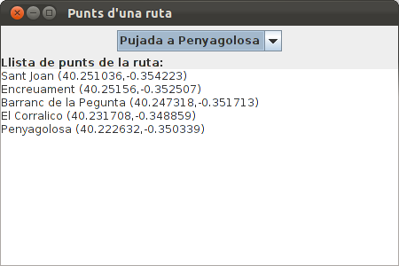
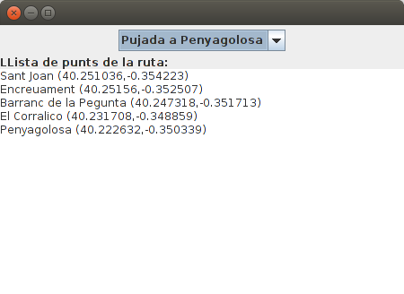

Exercicis
 Exercici T3_1
Exercici T3_1
En el projecte anomenat Tema3 , crea't un paquet anomenat exercicis on col·locarem tot el relatiu als exercicis d'aquest tema. Copia't dins del projecte el fitxer Rutes.dat que us passarà el professor. En ell tenim dades prèviament guardades que seran unes rutes consistents en una sèrie de punts amb una descripció. Cada punt seran unes coordenades (com en un mapa).
L'estructura de les dades guardades és la següent
- nom de la ruta (string)
- desnivell (int)
- desnivell acumulat (int)
- número de punts (int)
- Per cada punt:
- nom (string)
- latitud (double)
- longitud (double)
Observa que la quarta dada és un enter amb el número de punts de la ruta.
Fes un programa (amb fun main()) en el fitxer Kotlin Ex3_1_LlegirRutesSerial.kt que agafe les dades del fitxer (hi ha 2 rutes, però ho heu de fer genèric per a un número indeterminat de rutes) i les traga per pantalla amb aquest aspecte:
Ruta: Pujada a Penyagolosa
Desnivell: 530
Desnivell acumulat: 530
Té 5 punts
Punt 1: Sant Joan (40.251036,-0.354223)
Punt 2: Encreuament (40.25156,-0.352507)
Punt 3: Barranc de la Pegunta (40.247318,-0.351713)
Punt 4: El Corralico (40.231708,-0.348859)
Punt 5: Penyagolosa (40.222632,-0.350339)
Ruta: La Magdalena
Desnivell: 51
Desnivell acumulat: 84
Té 7 punts
Punt 1: Primer Molí (39.99385,-0.032941)
Punt 2: Segon Molí (39.99628,-0.029427)
Punt 3: Caminàs (40.00513,-0.022569)
Punt 4: Riu Sec (40.006765,-0.02237)
Punt 5: Sant Roc (40.017906,-0.02289)
Punt 6: Explanada (40.034048,-0.00633)
Punt 7: La Magdalena (40.034519,-0.005856)
Exercici T3_2
Construeix les següents classes:
Coordenades , que derivarà de Serializable (i que és convenient posar- li el número de versió per defecte: private const val serialVersionUID: Long = 1). Podeu consultar la classe Ruta que us passe per veure la manera de derivar de Serializable i posar-li número de sèrie.
Contindrà:
- latitud (double)
- longitud (double)
No caldrà contructor, ni getters ni setters, ja que Kotlin els genera automàticament
PuntGeo , que derivarà de Serializable (i que és convenient posar-li el número de versió per defecte: private const val serialVersionUID: Long = 1). Podeu consultar la classe Ruta que us passe per veure la manera de derivar de Serializable i posar-li número de sèrie.
Contindrà:
- nom (String)
- coord (Coordenades)
Ruta . Aquesta classe us la passarà el professor.
També implementa Serializable i conté:
- nom (String)****
- desnivell (int)
- desnivellAcumulat (int)
- llistaDePunts : un ArrayList de PuntGeo
Observa com per a més comoditat té els mètodes:
- addPunt(PuntGeo) , que afegirà un nou PuntGeo a la llista
- getPunt(int) , al qual se li passa l'índex del punt que es vol i torna tot aquest punt
- getPuntNom(int) , al qual se li passa l'índex del punt que es vol i tornarà el seu nom
- getPuntLatitud(int), al qual se li passa l'índex del punt que es vol i tornarà la seua latitud
- getPuntLongitud(int) , al qual se li passa l'índex del punt que es vol i tornarà la seua longitud
- size() , que ens dóna el número de punts guardats en la llista.
L'únic que has de fer en aquesta classe és:
- Fes un mètode nou en la classe Ruta anomenat mostraRuta() , que mostre el contingut de la ruta amb aquest aspecte:
Ruta: Pujada a Penyagolosa
Desnivell: 530
Desnivell Acumulat: 530
Té 5 punts
Punt 1: Sant Joan (40.251036,-0.354223)
Punt 2: Encreuament (40.25156,-0.352507)
Punt 3: Barranc de la Pegunta (40.247318,-0.351713)
Punt 4: El Corralico (40.231708,-0.348859)
Punt 5: Penyagolosa (40.222632,-0.350339)
En un fitxer Kotlin anomenat Ex3_2_PassarRutesSerialObj.kt , fes el programa que passe del fitxe Rutes.dat al fitxer Rutes.obj. És a dir, has d'anar agafant la informació del fitxer Rutes.dat , guardar la informació en un objecte Ruta , visualitzar la seua informació amb mostraRuta() i per últim guardar la informació de l'objecte en un fitxer anomenat Rutes.obj. I això fins el final de fitxer (hi ha 2 rutes)
En un fitxer Kotlin anomenat Ex3_2_LlegirRutesObj.kt , llig les rutes
guardades en el fitxer Rutes.obj i mostra-les per pantalla utilitzant el
mètode mostraRuta()
Exercici T3_3
Fes un programa en el fitxer Ex3_3_PassarRutesObjXML.kt (amb main) que passe el fitxer Rutes.obj a un fitxer XML anomenat Rutes.xml amb aquest aspecte. Els punts suspensius indiquen que hi ha més d'un punt en cada ruta, i que hi ha més d'una ruta
<rutes>
<ruta>
<nom>Pujada a Penyagolosa</nom>
<desnivell>530</desnivell>
<desnivellAcumulat>530</desnivellAcumulat>
<punts>
<punt num="1">
<nom>Sant Joan</nom>
<latitud>...</latitud>
<longitud>...</longitud>
</punt>
...
</punts>
</ruta>
...
</rutes>
Exercici T3_4
Fer una aplicació gràfica que llegirà el fitxer Rutes.xml per a que apareguen els noms de les rutes en un JComboBox. Quan se seleccione una, ha d'aparèixer la llista de punts (nom, latitud i longitud) en un JTextArea. L'aspecte podria ser el següent:

Hi ha dos mètodes per a saber quin és l'element seleccionat del JComboBox :
- getSelectedItem() torna un String amb l'element seleccionat
- getSelectedIndex() torna un enter amb el número d'ordre de l'element seleccionat (0 per al primer; 1 per al segon; ...)
Observeu com en aquest cas ens convé getSelectedIndex() , ja que el número d'ordre de l'element seleccionat serà el mateix que el número d'ordre de la ruta que busquem en el NodeList doc.getElementsByTagName("ruta")
L'esquelet del programa seria aquest. Copieu-lo en un fitxer Kotlin anomenat Ex3_4_VisRutesXML.kt :
import javax.swing.*
import java.awt.*
import org.w3c.dom.Document
import org.w3c.dom.Element
import javax.xml.parsers.DocumentBuilderFactory
class Finestra : JFrame() {
init {
var doc: Document
// sentències per a omplir doc
defaultCloseOperation = JFrame.EXIT_ON_CLOSE
setTitle("Punts d'una ruta")
setSize(400, 300)
setLayout(BorderLayout())
val panell1 = JPanel(FlowLayout())
val panell2 = JPanel(BorderLayout())
add(panell1,BorderLayout.NORTH)
add(panell2,BorderLayout.CENTER)
val llistaRutes = arrayListOf<String>()
// sentències per a omplir l'ArrayList anterior amb el nom de les rutes
val combo = JComboBox(llistaRutes.toArray())
panell1.add(combo)
panell2.add(JLabel("Llista de punts de la ruta:"),BorderLayout.NORTH)
val area = JTextArea()
panell2.add(area)
combo.addActionListener{
// accions quan s'ha seleccionat un element del combobox,
// i que han de consistir en omplir el JTextArea
}
}
}
fun main(args: Array<String>) {
EventQueue.invokeLater {
Finestra().isVisible = true
}
}
Exercici T3_5
Fer un programa en el fitxer Kotlin Ex3_5_PassarRutesObjJSON.kt que passe el fitxer Rutes.obj a un fitxer JSON Rutes.json amb aquest aspecte:
{
"rutes": [
{
"nom": "Pujada a Penyagolosa",
"desnivell": 530,
"desnivellAcumulat": 530,
"llistaDePunts": [
{
"nom": "Sant Joan",
"coord": {
"latitud": 40.251036,
"longitud": -0.354223
}
},
...
]
},
...
]
}
Com que ja tenim creades les classes Ruta , PuntGeo i Coord , el més còmode serà utilitzar Moshi. Tan sols ens farà falta una classe que ho englobe tot:
class Rutes(var rutes: MutableList<Ruta> = mutableListOf<Ruta>())
Exercici T3_6
Replicar l'exercici 3_4, però ara llegint del fitxer Rutes.json , en compte de Rutes.xml
Fer una aplicació gràfica que llegirà el fitxer Rutes.json i que aparega el nom de les rutes en un JComboBox. Quan se seleccione una, ha d'aparèixer la llista de punts (nom, latitud i longitud) en un JTextArea. L'aspecte podria ser el següent:

Hi ha dos mètodes per a saber quin és l'element seleccionat del JComboBox :
- getSelectedItem() torna un String amb l'element seleccionat
- getSelectedIndex() torna un enter amb el número d'ordre de l'element seleccionat (0 per al primer; 1 per al segon; ...)
Observeu com en aquest cas, igual que en l'exercici 3_4, ens convé getSelectedIndex().
I com que ja tenim definides les classes, ens convé utilitzar Moshi.
Aquest seria l'esquelet del programa. Copieu el següent codi en un fitxer Kotlin anomenat Ex3_6_VisRutaJSON.kt :
import javax.swing.*
import java.awt.*
import com.squareup.moshi.Moshi
import java.io.File
class FinestraJSON : JFrame() {
init {
var llistaRutes: ArrayList<Ruta>
// sentències per a omplir llistaRutes
defaultCloseOperation = JFrame.EXIT_ON_CLOSE
setTitle("JSON: Punts d'una ruta")
setSize(400, 300)
setLayout(BorderLayout())
val panell1 = JPanel(FlowLayout())
val panell2 = JPanel(BorderLayout())
add(panell1, BorderLayout.NORTH)
add(panell2, BorderLayout.CENTER)
var nomsLlistaRutes = arrayListOf<String>()
// sentències per a omplir l'ArrayList anterior amb el nom de les rutes
val combo = JComboBox(nomsLlistaRutes.toArray())
panell1.add(combo)
panell2.add(JLabel("Llista de punts de la ruta:"), BorderLayout.NORTH)
val area = JTextArea()
panell2.add(area)
combo.addActionListener {
// accions quan s'ha seleccionat un element del combobox,
// i que han de consistir en omplir el JTextArea
}
}
}
fun main(args: Array<String>) {
EventQueue.invokeLater {
FinestraJSON().isVisible = true
}
}
Llicenciat sota la Llicència Creative Commons Reconeixement NoComercial CompartirIgual 2.5